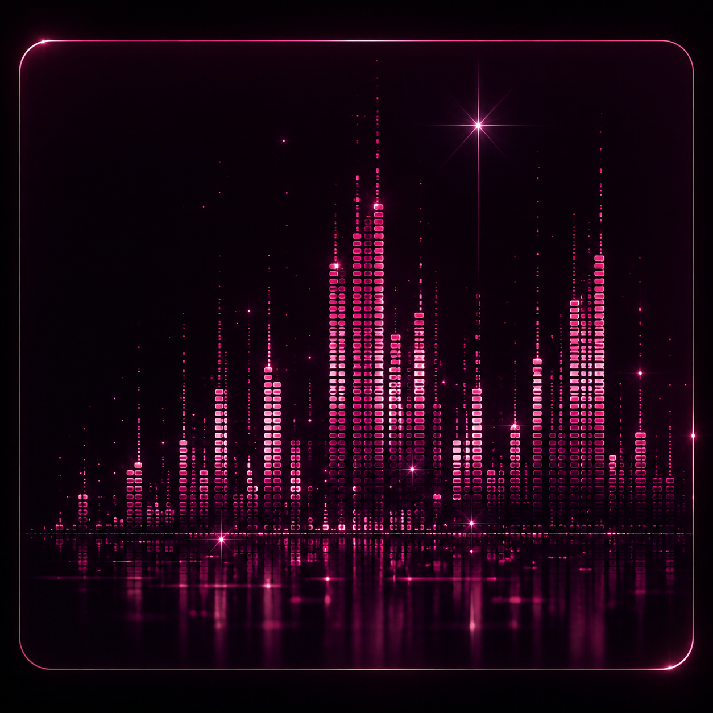

Écris une note, une idée ou une mémoire. Elle reste dans ce navigateur jusqu’à export ou suppression.
✦ Texte local📄 Export .md⬡ Backup JSON
Night Vault public · Club Lounge
Écris, relis, cherche et exporte des fiches Markdown. Aucun contenu personnel n’est publié automatiquement dans GitHub.

BlueAzur-Hub/erith-ia-memory/private/night-vault/
Le dossier “private” organise le projet, mais ne rend pas son contenu secret sur un dépôt public.
Night · Public Browser Vault
Écris une note, une idée ou une mémoire. Elle reste dans ce navigateur jusqu’à export ou suppression.
Quel usage pour cette fiche ?
La sélection reste descriptive. Cette édition publique ne transmet rien à Night, Sun, GitHub ou un service externe.
Fiche locale de réflexion Night.
Note du souvenir
1 / 7 · à classerCette note aide à retrouver l’importance de la fiche dans ce navigateur.Utilise l’archive JSON pour conserver tes fiches avant de vider le navigateur.
Night · Public Browser Vault
Les souvenirs ci-dessous sont stockés dans le navigateur courant. 📄 Exporter en .md télécharge une fiche Markdown que tu peux ensuite ajouter manuellement dans le dépôt, par exemple sous `private/night-vault/exports/`.
Exports publics
Cette page ne peut pas écrire dans GitHub depuis le navigateur. Les fichiers exportés sont téléchargés puis ajoutés au dépôt par une action Git explicite.
Restauration manuelle
Importe uniquement une archive produite par Night Vault Public Browser Edition.
Contrôle public
Thèmes Night
Château de mesures
L’animation reste décorative et ne lit aucun média externe.
Limites publiques
Cette version ne contient ni token, ni compte, ni clé, ni DPAPI, ni accès à un dépôt. Le chemin `private/night-vault/` est une convention d’organisation : sur un dépôt public, son contenu reste public.
Mode d’emploi
Aucune donnée de contenu n’est envoyée automatiquement à GitHub. Ne place jamais de souvenirs personnels ou de secrets dans un dépôt public.